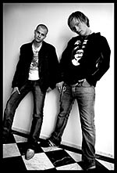

пресс-релиз

Норвежская блюзовая сцена в наши дни является, пожалуй, наиболее развитой в Европе. Сложилось так, что массовая культура в Норвегии с середины 20-го века очень сильно ориентирована на США, все поголовно, включая детей, говорят по-английски, а поток нефтедолларов позволяет оплачивать приезд музыкантов самого высокого уровня. В маленьком городе Нотодден ежегодно проходит самый крупный европейский блюзовый фестиваль - Notodden Blues Festival, журналисты из США приезжают на него ради уникальной возможности послушать концертирующих блюзовых звезд из Америки в одном месте. В самом центре Осло расположен блюзовый клуб Muddy Waters, которому трудно подобрать равный в Европе по уровню музыкантов в ежедневной программе.
В подобных тепличных условиях появляются и творчески вырастают молодые блюзовые музыканты, которые с самого начала ориентируются на исполнителей самого высокого уровня, развивают вкус, имея возможность слушать лучшее из лучшего. В маленькой Норвегии около 80 блюзовых групп, и можно с уверенностью назвать 10 очень ярких музыкантов. Некоторые из них выступали в России в клубах - это Vidar Busk, Amund Maarud, Kid Andersen, Eirik Bergene. Блюзмены из этой компании вместо того, чтобы годами играть одну и ту же накатанную программу, собираются вместе на 1-2 сезона в новые проекты для того, чтобы делать музыку в новой стилистике. Такие эксперименты всегда интересны. Ядром нескольких групп одновременно является ритм-секция хаус-бенда клуба Muddy Waters - бассист William Troiani из США и молодой барабанщик Alexander Pettersen, который концертирует в блюзовых группах с ранней юности. Хаус-бенд клуба MW выступает с большинством блюзовых солистов из США, если те приезжают в Норвегию в одиночку, что дает им редкий опыт и гибкость в разных музыкальных направлениях.
Молодой гармонист Эйрик Бергене (Eirik Bergene) переключился с успешной карьеры футболиста на губную гармонику всего 6 лет назад и буквально за пару лет благодаря своим талантам достиг впечатляющих результатов. На сегодня - он входит в тройку лучших норвежских гармонистов вместе с Richard Gjems и Arne Rassmussen, втроем их можно бывает увидеть в регулярном шоу "Blues Harp Melt Down" на базе группы Эйрика - Eirik Bergene Band. Стиль Эйрика Бергене сформировался под влиянием как традиционных мастеров - Little Walter и Walter Horton, так и современных гармонистов - Mark Ford, Paul DeLay и Carlos DelJunco. В молодые годы Эйрик уже развил в себе мощный блюзовый голос. И что не очень типично для его возраста, Эйрика заряжает сырой энергией традиционная старая блюзовая музыка, драйв, который заводил исполнявших ее классиков. И они для Эйрика - любимые музыканты, а не требующие почтения музейные экспонаты. Музыкальные вкусы Эйрика достаточно эклектичны - он без застенчивости перемешивает блюз, ритм-н-блюз и соул-музыку в достаточно современных аранжировках. Все это делает его концерты очень эмоциональными, свежими для восприятия, и разнообразными по стилю и звучанию.
Томми Кристиансен (Tommy Kristiansen) - молодой талант, гитарист из Бергена. Он творчески рос под несомненным влиянием норвежских гитарных блюзовых героев, таких как, например, Vidar Busk. Томми организовал свою первую серьезную группу Tommy & The Runaway Boys в 14 лет, записал с ней 2 диска, пройдя с группой через все стилистические изменения вслед за лидерами блюза в Норвегии. Несмотря на то, что на начальном этапе его музыка была недостаточно оригинальна в контексте, все это чрезвычайно плодотворно повлияло на его гибкость как музыканта и дало бесценный опыт. На сегодня у Томми сформировался собственный стиль, и его можно назвать одним из нескольких ведущих норвежских блюзовых гитаристов. В качестве основных повлиявших на него гитаристов Томми называет Junior Watson, Ronnie Earl и двух братьев - Jimmy Vaughan и Stevie Ray Vaughan. Его музыкальные пристрастия значительно шире блюзовой темы, на пластинках Томми есть как откровенно роковые собственные вещи, так и красивые баллады в сопровождении lap steel guitar, на которой он виртуозно играет слайдом.
Проект Томми с Эйриком ориентирован на блюзовую тематику как основу, однако, учитывая устремления обоих участников, она будет значительно расширена. Сразу после возвращения с российских гастролей Эйрик с Томми выпускают диск в Норвегии, которого уже ждут с нетерпением в блюзовой тусовке, а блюзовые критики точат карандаши, ибо с таким неординарным материалом им будет, где развернуться.
Гастроли организованы blues.ru и norge.ru при поддержке Посольства Норвегии в России.